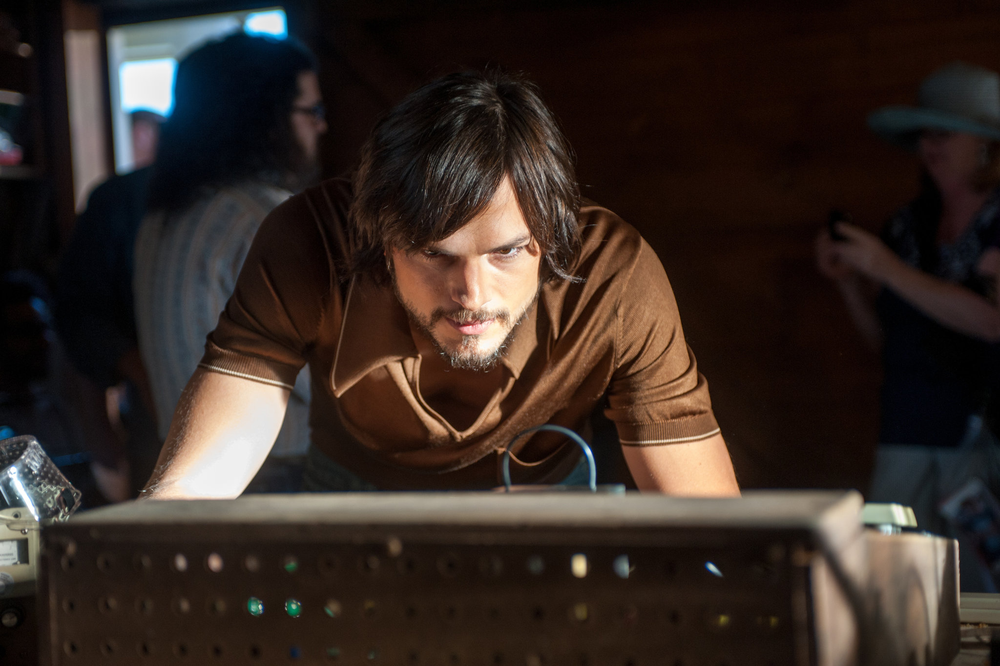
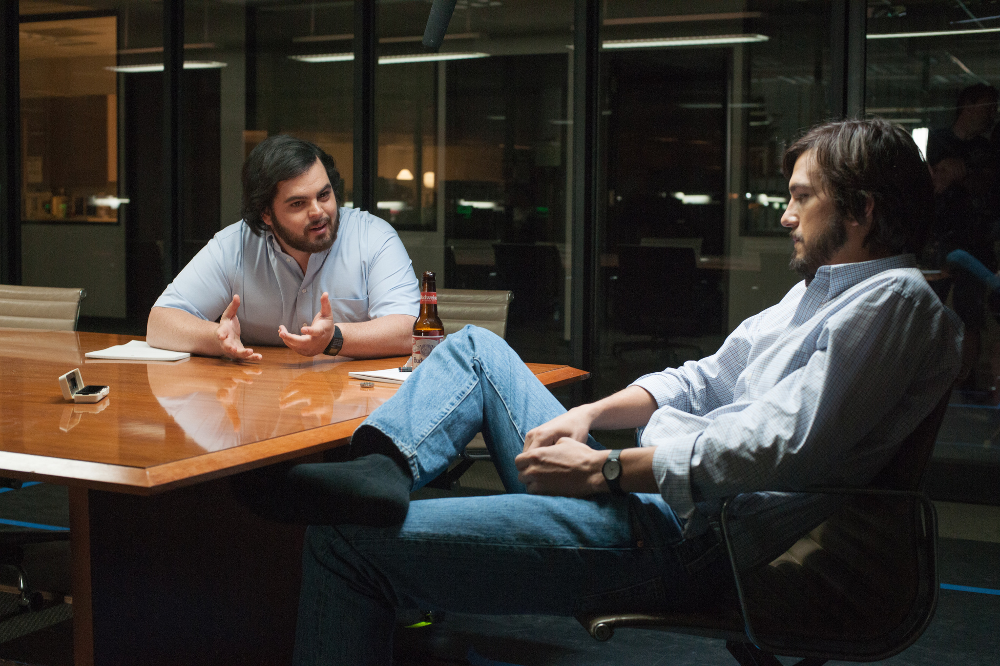
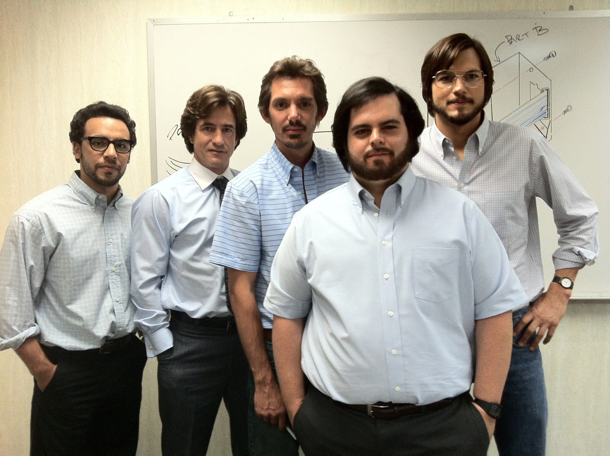
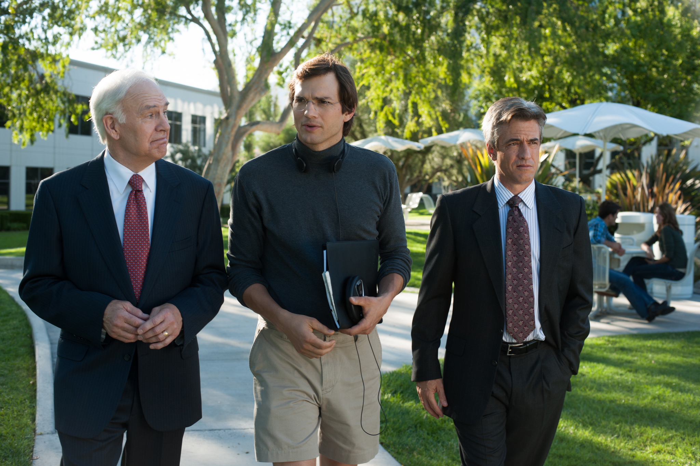

JOBS covers the life of Steve Jobs (Ashton Kutcher) from college to the launch of the iPod in 2001, one of Apple's biggest cornerstone moments and arguably a paradigm shift in Occidental society. Contrary to popular belief, it is not based on Walter Isaacson's biography of Jobs; it is an original screenplay that corrals a series of more or less meaningful moments in Steve Jobs' life that draw a portrait of an enlightened, misunderstood, and frustrated man. He is always right, and everybody else is always wrong because they cannot see the big picture.
TrailerIn 2001, an older Steve Jobs (Ashton Kutcher) introduces the iPod at an Apple Town Hall meeting. Jobs visited India frequently with his companion Kotke. In order to live with his adoptive parents, Jobs relocated to Los Altos, California. While employed by Atari, he forms a partnership with his friend Steve Wozniak (Josh Gad) after learning that Wozniak has created a personal computer known as the Apple I. Wozniak first showed the Apple I at the Homebrew Computer Club before being approached by Paul Terrell, who was interested in the Apple I. Wozniak and Jobs receive their first order. Apple Computer has grown incredibly successful, and this success has also caused Jobs alienate himself from his loved ones. However, they couldn't create these computers alone; Jobs also added four individuals to the Apple team, and they released the Apple II. To the Macintosh Group, Jobs relocated. Despite the Macintosh's release, Sculley, who later took over as CEO of Apple Computer, forcibly removed Jobs from the organization in. The movie follows Steve Jobs' marriage to Laurene Powell Jobs after what happened. Gil Amelio asked Steve Jobs to return to Apple as a consultant, and Jobs was quickly appointed as the new CEO. He became interested in Jony Ive's work and is committed to reshaping Apple. The film ends with Jobs recording the dialogue for the Think Different commercial in 1997.
The focus of the film is on Steve Jobs, one of Apple's founding members and its soul, as he faces his early hardships and ultimately achieves great success. It's a wonderful two and a half-hour adventure that walks you through his life scene by scene. The film depicts how Jobs, a college dropout, came to know what he wanted to do with his life when he experienced a spark of grit and resolve. He recognized an opportunity as soon as it presented itself, and with the aid of his tech-savvy friend Steve Wozniak, he went on to construct something so iconic that it is now one of the most extraordinary businesses in the entire world.The way that the movie depicts every feeling, emotion, period of time, and circumstance that Jobs encountered enthralls you and gives you a sense of enlightenment. It speaks about the fortitude and courage required to make your dreams come true. The movie depicts how one can stumble and fall back in life, but still rise back up and move forward with even more resolve—even when the people you trust betray you. The first step to success is having the capacity for lofty dreams. However, seeing your desire come true will send you along a route replete with humps and bumps.
To be completely honest, everything you see in the film is breathtaking. In terms of lighting, framing, camera movements, depth of field, zoom, focus, and color, the cinematography is so precise that it allows spectators to envision themselves as part of the scene. Being a lover of this genre of film, I was already anticipating it and had high expectations, and it didn't let me down. Additionally, the music and sound are crystal clear, making it simple to comprehend and experience the mood of the film.
I've already seen this film, but looking back, I'll be honest and say that I wasn't overly excited to learn that Ashton Kutcher would play Steve Jobs. Because how could a character from the long-running comedy series That 70's Show ever do justice to one of the most significant figures in technology history? However, after I watched the movie again, I would say he really nailed it, just like the other characters. His acting was spot-on; every emotion and word he uses has something that will impact the audience. Also, one of the characters that amazes me more is his best friend, Steve Wozniak. I love the acting, and my favorite part of his part in the movie, aside from him being a supportive best friend, is when he says good-bye to his best friend Steve Jobs. It was emotional, and both of them really touched my heart. The same goes for the other main characters; they all nailed it, and I still enjoy the movie after seeing it for a very long time.
The life of Steve Jobs is the subject of this movie, and from my perspective, learning about his life and the character development that went into it has taught me a lot of valuable things. Not only when it comes to developing into a successful entrepreneur, but also when it comes to enjoying the life we want. Since we are afraid that others will criticize us because we are different, we are afraid to go forth and live the lives that our souls desire. But Steve Jobs wants us to go out and live with it. We control our lives, and we are the only ones who can change and improve them. This film is for everyone. You might not enjoy it from the start because Steve Jobs is an asshole from the very first part of the film, but trust me, you will get a smile on your face after seeing this movie.